PlanviewPublicación del CEO, promocionada
«Strategy approved. Budget committed. Teams in motion. And somewhere between the boardroom and the front lines, intent gets lost.»
112 díasTriskell × Billber · Jueves 5 de noviembre de 2026
Revisión de la fase de test de mercados · agosto a octubre de 2026
Avanza con → o espacio · retrocede con ← · índice con I
01El encargo
Plan de test por país y canal.
Google, Bing y LinkedIn.
Con menos recorrido que la ola 1.
México, Colombia, Costa Rica y Chile, con el informe de Gartner.
Madrid, encuentro ejecutivo.
Lo aprendido y el siguiente paso.
Objetivo pactado
Saber dónde responde el mercado antes de escalar la inversión.
Esa fase ya nos ha dado respuestas por mercado, por canal y por tipo de anuncio. Os las enseñamos todas, con sus cifras.
02Lo aprendido por mercado
03Lo aprendido por canal
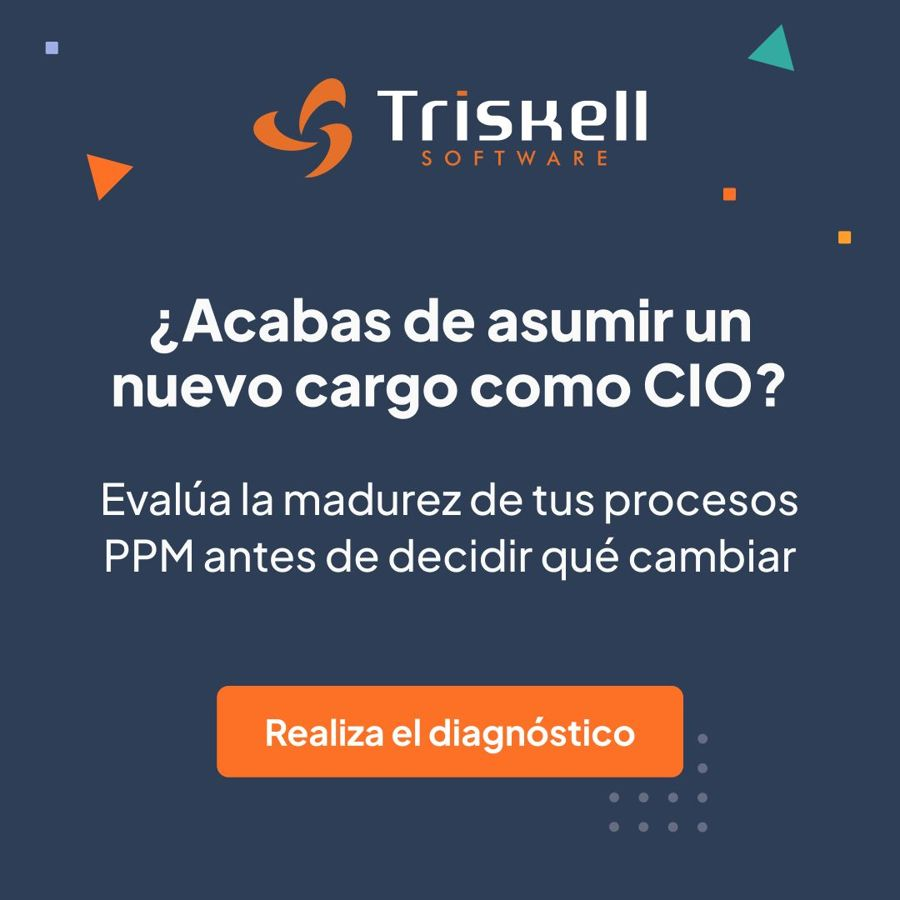
Hablar a un cargo funciona. «¿Acabas de asumir un nuevo cargo como CIO?»: 4 conversiones a 419 €. Y un dolor concreto, «Trazabilidad para TI regulada», 2 a 73 €.
Margen claro: en Chile PMO solo el 3 % de las impresiones llegó a la función Proyectos, y el 11 % fue a Educación. Segmentar por función y cargo lo corrige.
Quien busca Microsoft Project sigue ahí tras la retirada de Project Online. Conversiones de esas búsquedas, por mes:
Octubre, el mejor mes, aunque con muchos estudiantes. Los genéricos de Chile y Sudáfrica: 2.302 € para 2 conversiones, y de ahí salió Novandino.
contactos desde agosto, con la misma estructura que Google. 7 con perfil de empresa y ninguna demo.
Mismas búsquedas y los mismos estudiantes que en Google. Proponemos pararlo para concentrar la inversión en Google y LinkedIn.
04La calidad de los contactos · 1 ago → 4 nov
Los 4 contactos de LinkedIn tienen perfil de empresa. Los estudiantes llegan por búsqueda, y en octubre fueron 12 de 19.
Por qué entran y cómo los filtramos
Microsoft Project se enseña en institutos y universidades (Duoc UC, INACAP, Wits…): el alumno busca lo mismo que el PMO que tiene que migrar. Es propio de este nicho.
05De contacto a demo
Llegó por la búsqueda genérica de Google en Chile. Reunión el 4 de septiembre y un negocio de unos 10.000 €.
Modubeng (su CEO) e Itlhokomeleng. Se quedaron en un correo.
Hemos revisado el origen de las 100 reuniones desde agosto, una a una (UTM, GCLID y fuente): la medición está bien, no hay demos de publicidad escondidas. Las demás demos de estos meses llegan por la web orgánica y los eventos.
Oportunidad de seguimiento comercial
Cinco contactos con perfil que todavía no tienen una conversación abierta
Os pasamos el listado completo de contactos con perfil para revisarlo con los territory managers.
La pregunta
También se puede combinar: el grueso en lo probado y una parte acotada para explorar.
06Google, por dónde irá
Sin presupuestos cerrados hoy. El reparto por país lo cerramos con vosotros, con vuestra respuesta a la pregunta de mercados.
07LinkedIn, por dónde irá
LinkedIn permite llegar a cada persona por su cargo. El margen está más en qué le decimos que en a quién.
La estrategia se aprueba en el comité y se pierde por el camino.Visibilidad de cartera y valor
Más proyectos que gente, y prioridades que cambian cada lunes.Capacidad y planificación
Tus equipos viven en Jira. Tu comité, en PowerPoint.Más que una herramienta de tareas
Cada proyecto que se retrasa es regulación que llega tarde.El sector, con sus palabras
Por función, el 40 % de las impresiones llegó a PMO y TI. Por intereses, el 3 %.
Las 9 conversiones vienen de anuncios en castellano. Sudáfrica sale del plan.
Campañas y públicos os los traemos cerrados, con vuestra respuesta a la pregunta de mercados.
08Los anuncios, la gran palanca
Criterio: ganador es el que más tiempo lleva activo y más versiones tiene. Nadie mantiene tres meses un anuncio que no le funciona.
«Strategy approved. Budget committed. Teams in motion. And somewhere between the boardroom and the front lines, intent gets lost.»
112 díasTexto en primera persona, de directivo a directivo.
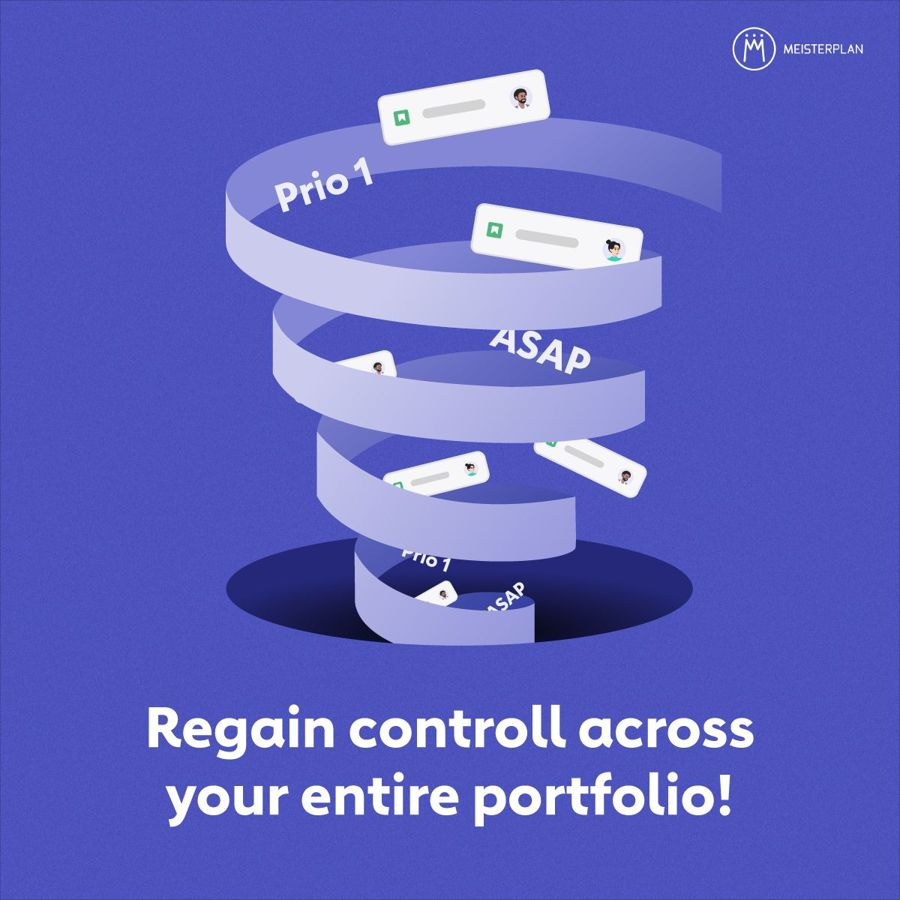
105-111 días4 versiones. Una metáfora visual, no una captura.
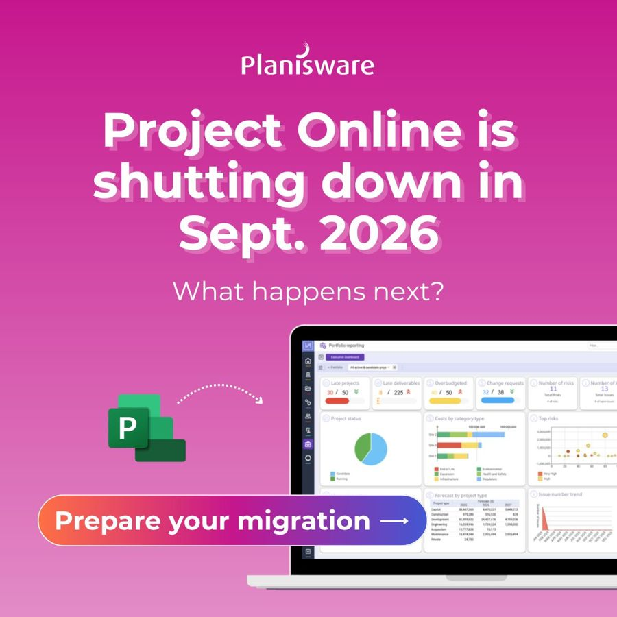
86 díasUrgencia con fecha. Desde el cierre, nadie ocupa ese espacio.
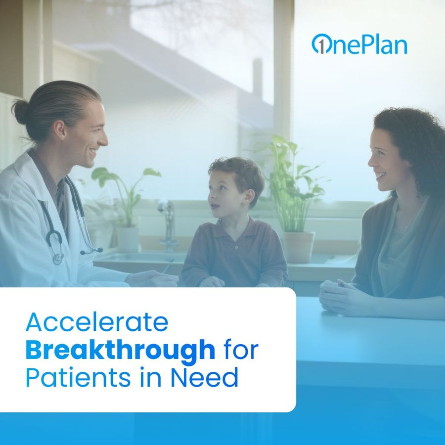
84 días4 versiones, activas hoy.
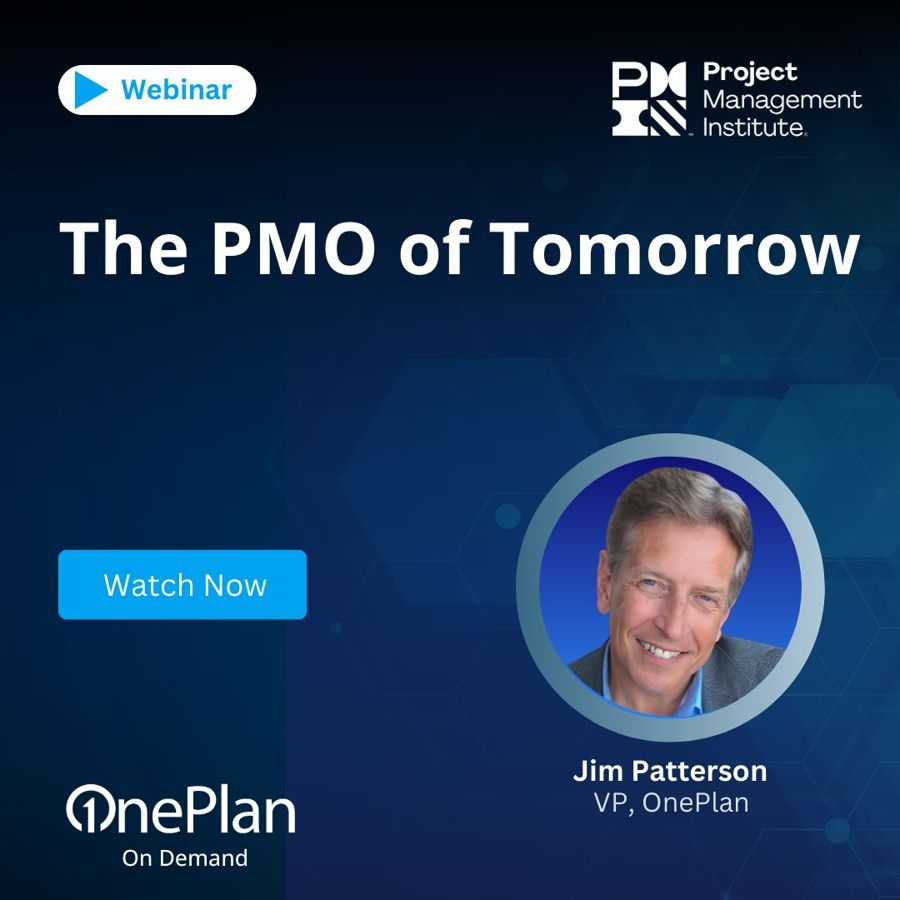
81 díasWebinar, y relanzado.
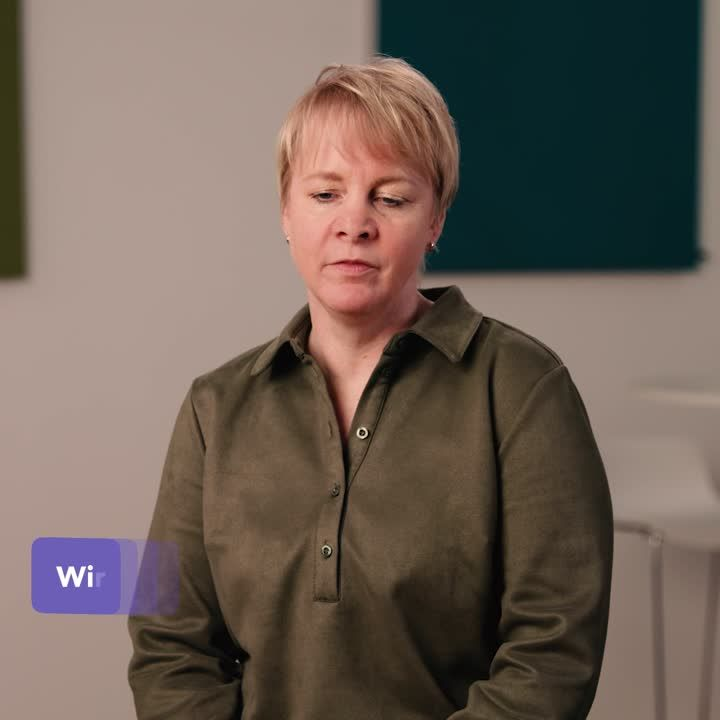
36-42 días8 vídeos activos hoy. Es lo que más crece.
Biblioteca pública de anuncios de LinkedIn, enero-junio y agosto-octubre de 2026. Los vídeos y el resto de anuncios, en la diapositiva siguiente.
08Galería de la competencia
«Una herramienta, todo a la vista»: cliente a cámara (en alemán).
Capacidad · cliente a cámara«¿Sin visión de proyectos y carga de trabajo?» (en alemán).
Capacidad · cliente a cámara«Una única fuente de verdad para cartera y recursos» (en alemán).
Capacidad · cliente a cámara«An overview of projects and resource utilization for all stakeholders.»
Capacidad · cliente a cámara«One platform, everything at a glance.»
Capacidad · cliente a cámara«Una migración de empresa lleva de 1 a 3 meses. Si no has empezado, ya vas tarde.» Acompaña al anuncio de 86 días.
La herramienta que desaparece«Strategy approved. Budget committed. Teams in motion. And somewhere between the boardroom and the front lines, intent gets lost.»
Publicación del CEO, con un dato de encuesta a 600 directivos.
La estrategia se pierde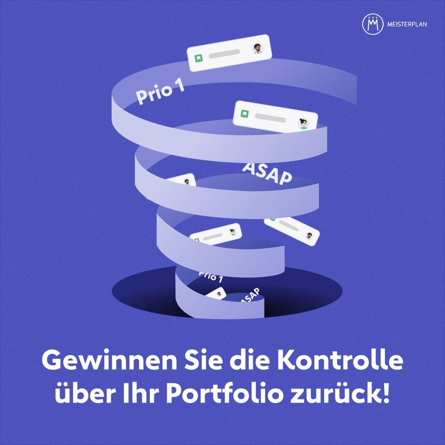
«Recupera el control de tu cartera»: la espiral de «Prio 1» y «ASAP».
Capacidad y planificación reactiva«A pragmatic guide for IT PMOs to escape reactive planning.»
Capacidad y planificación reactiva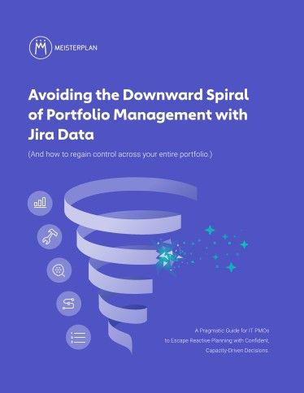
La misma guía, ahora como documento.
Capacidad y planificación reactiva«Project Online is shutting down in Sept. 2026. What happens next?»
La herramienta que desaparece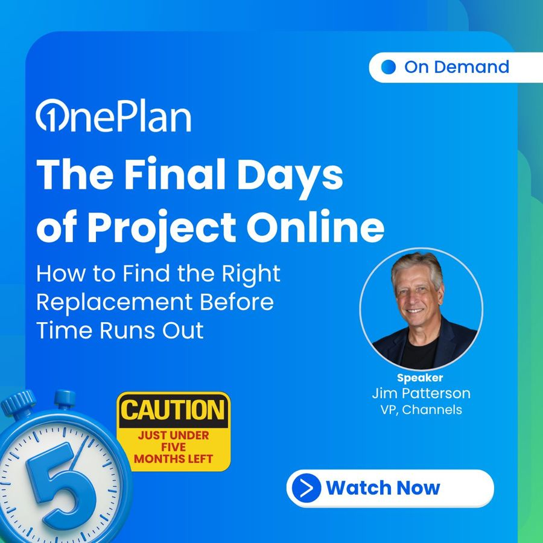
«Project Online retires in September 2026. Most organizations are still deciding.»
La herramienta que desaparece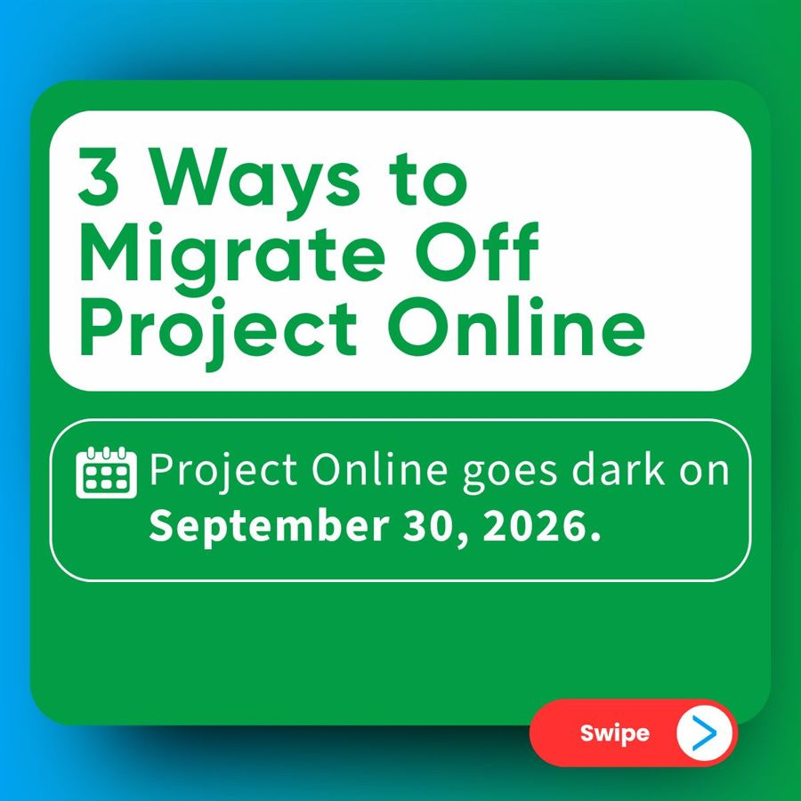
Carrusel «3 ways to migrate». Activo hasta el 30-sep; después, nadie.
La herramienta que desaparece«Cada retraso en el desarrollo afecta a pacientes que esperan nuevas terapias.»
Sector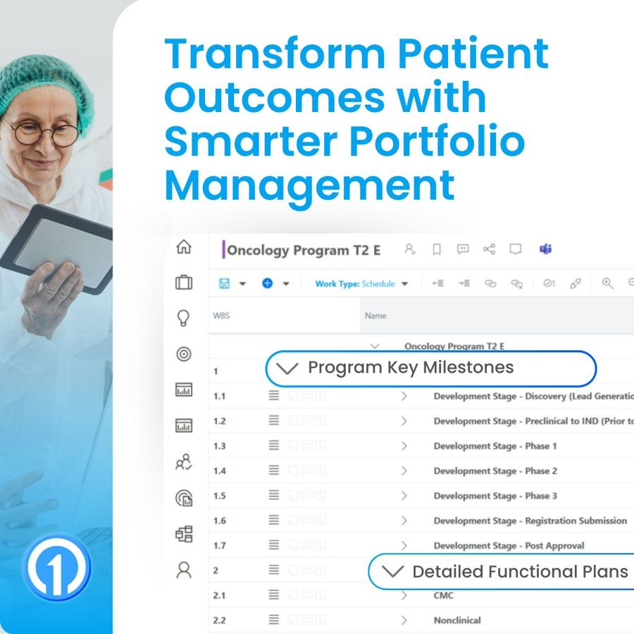
«La innovación científica no es el cuello de botella. La coordinación sí.»
SectorWebinar «The PMO of Tomorrow»: IA y gestión de cartera.
La PMO que viene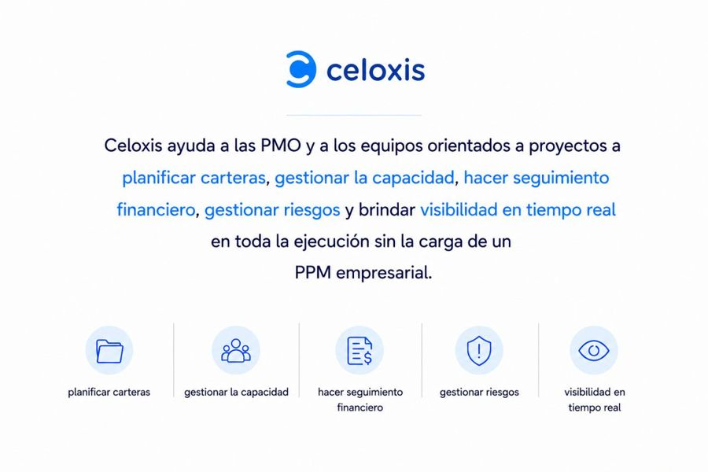
En castellano: «visibilidad en tiempo real de proyectos, capacidad y finanzas». 11 versiones.
Más que tareas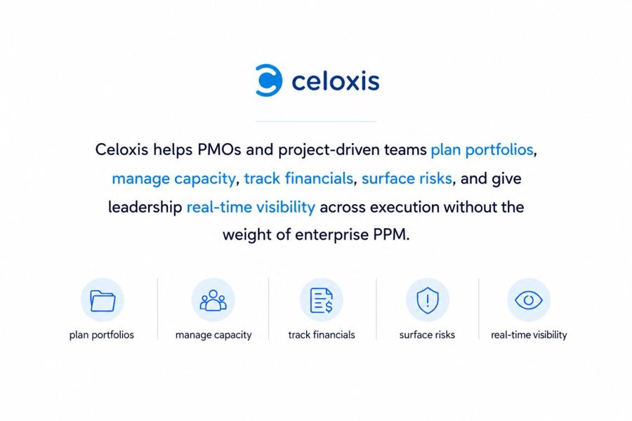
La misma pieza en inglés: cambian idioma y titular, el concepto se mantiene.
Más que tareas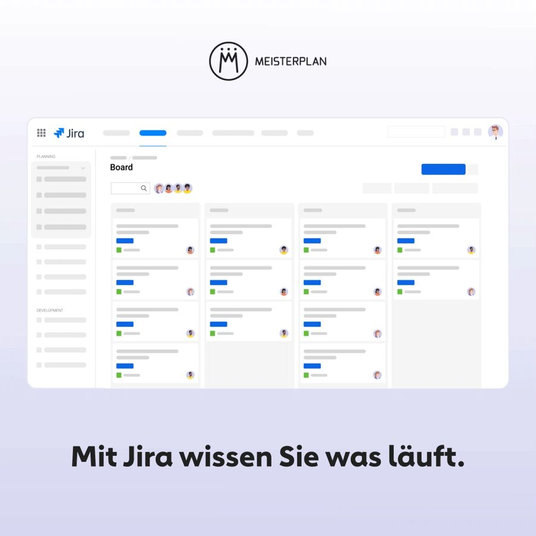
«Jira para tus tareas, Meisterplan para tus decisiones de cartera.»
Más que tareasNo hay anuncios con esa combinación. Prueba con «Todos».
08Qué significa para Triskell
Un directivo o un cliente a cámara, o una metáfora visual. Es lo que crece de agosto a octubre.
Problema, consecuencia y oferta, con una frase grande en la pieza.
Cambian idioma, formato y titular. Celoxis tiene 11; Meisterplan, 4 más 8 vídeos.
Ofrecen una guía, un webinar, un diagnóstico o una prueba.
Meisterplan lo hace en alemán e inglés. Para España y LatAm, nadie.
Desde el 30 de septiembre, ningún competidor lo anuncia.
CIO: la estrategia que se pierde · PMO: la capacidad · CTO: Jira frente a cartera · Banca y sector público: su sector.
Diferenciarnos nos da atención sin pagar más por ella.
09Ángulos para los anuncios
Aprobamos la estrategia en enero. En octubre, nadie en el comité sabía qué proyectos la estaban cumpliendo.
Teníamos más proyectos aprobados que gente para hacerlos, y cada lunes cambiaban las prioridades.
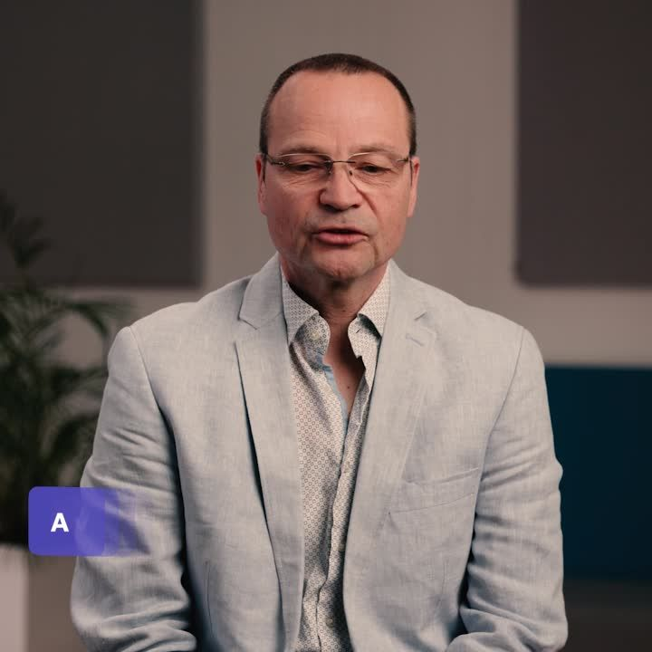
Meisterplan · 8 vídeos, 36-42 díasSi todo es prioridad 1, nada lo es.
Tus equipos viven en Jira. Tu comité, en PowerPoint.
30.09.2026. Project Online, retirado. Tu cartera de proyectos sigue ahí.
En banca, cada proyecto que se retrasa es regulación que llega tarde.
Es un mapa creativo, no el briefing final: los ángulos y formatos que funcionan en la competencia, para adaptarlos a Triskell. No significa producir estas seis ideas tal cual. De cada anuncio que hagamos os pasaremos antes un briefing detallado para que lo validéis.
Las de imagen son las más rápidas. Las de vídeo las grabáis vosotros con vuestros medios, a partir de nuestro guion e indicaciones detalladas, y nosotros las editamos. La 5 depende de los datos.
10Lo que necesitamos de vosotros
Para que los anuncios hablen de funciones reales, como la IA de cada módulo, y no en genérico.
Es el formato que más dura en la competencia. Lo grabáis vosotros con vuestros medios, con un guion detallado y nuestras indicaciones de grabación, y nosotros lo editamos.
Para usar la reimpresión en anuncios, que es nuestro mejor coste en LatAm. Y la versión en castellano, si existe.
11 · Nuestros compromisos
Cada semana, la foto de lo que ha pasado. Cada dos semanas, la imagen completa, juntos.
Inversión por canal y mercado, contactos, coste por contacto con perfil y qué hemos cambiado. La foto de la última semana.
Para revisar juntos la estrategia con más calma: cómo rinde cada formato y cada campaña desde que arrancó, y lo que queráis contarnos en persona, como una idea nueva o un cambio de foco.
12Próximos pasos
Modo guardia: solo sigue activo lo que ya da señal. Empezamos a trabajar en la nueva estrategia y os pasamos la horquilla de producción creativa.
Os la enviamos por Slack para que la validéis: Google y LinkedIn, mercados, los anuncios que se producen y su rotación.
La vemos juntos y resolvemos dudas antes de lanzarla.
¿Os encaja?